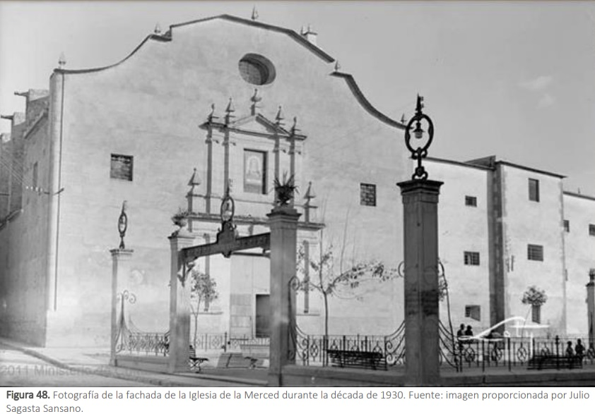
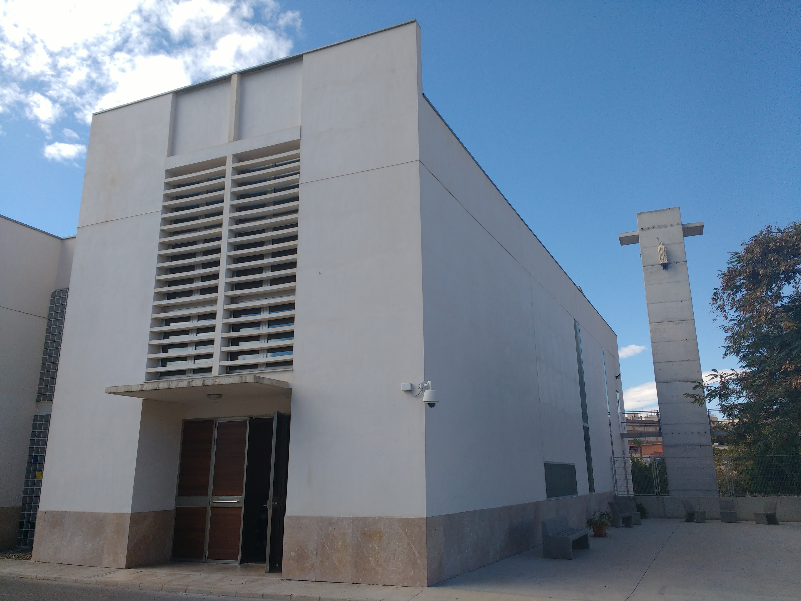

Las Clarisas llegaron a Elche en 1516, cuando Fray Esteban de Olmos y Doña María Ruiz impulsaron la creación del primer monasterio bajo el patrocinio de Santa Clara. Su establecimiento marcó el inicio de una presencia constante y orante en la ciudad.
El primer convento se ubicó en el edificio conocido como la Encarnación, que fue adaptado para albergar la vida comunitaria de las hermanas.
Durante el siglo XVII, debido al crecimiento de la comunidad, las hermanas se trasladaron al antiguo convento de la Merced. Este edificio histórico, ubicado cerca del centro, acogió a las Clarisas durante más de tres siglos.
En el siglo XX, por motivos de conservación y adecuación, se decidió construir un nuevo convento. El actual monasterio de Santa Clara se ubica en un entorno más silencioso, favoreciendo la vida contemplativa. Fue inaugurado en la década de 1970 y continúa siendo casa de oración y fraternidad.
Las hermanas continúan su vida de oración, silencio, trabajo y acogida fraterna en Elche. La comunidad actual está formada por mujeres de distintas edades que dedican su vida al seguimiento de Cristo en pobreza y fraternidad. Su testimonio discreto sigue siendo una bendición para la ciudad.